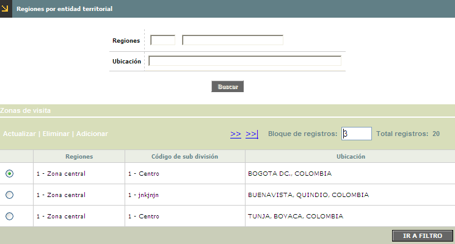
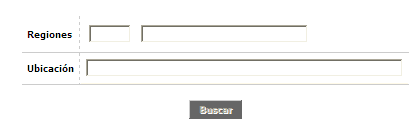
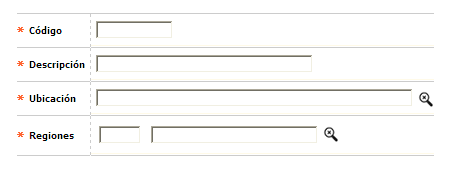
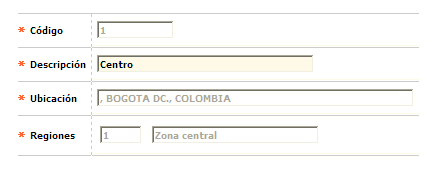
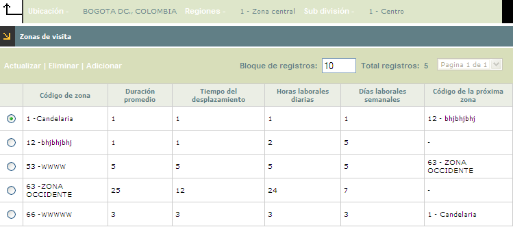
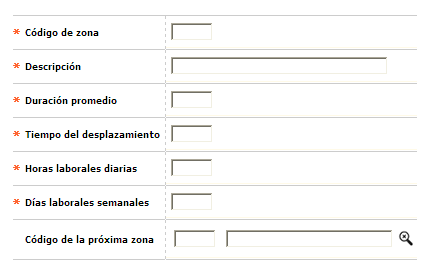
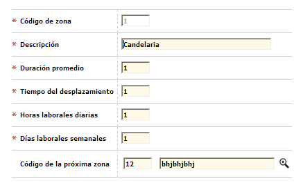

Regiones por Entidad Territorial
Por medio de esta opción se pueden subdividir las Regiones parametrizadas, cuantas veces desee el usuario de acuerdo con la información contenida en la tabla Información geopolitica.
El formulario contiene los enlaces: Actualizar,Eliminar y Adicionar Adicionalmente, cuenta con un filtro de búsqueda

Filtro: Se pueden realizar consultas a través de las siguientes opciones:

|
Regiones |
Campo alfanumérico de tres dígitos, que contiene el código asignado a cada Región. Se puede diligenciar de forma manual o desplazando la lista de valores. |
|
Ubicación |
Campo diligenciable por medio de lista de valores, en la cual se despliegan los datos contenidos en la tabla Información geopolitica. |
Adicionar: Al activar ese enlace se despliega un formulario:

Descripción de campos
|
Código |
Campo alfanumérico de 8 dígitos, obligatorio, que contiene el código asignado a la subdivisión que se esta creando. |
|
Descripción |
En este campo alfanumérico de 30 posiciones, obligatorio, se registra el nombre de la subdivisión asociada a cada código. |
|
Ubicación |
Campo obligatorio, diligenciable por medio de lista de valores, en la cual se despliegan los datos contenidos en la tabla Información geopolitica. |
|
Regiones |
En este campo alfanumérico de 3 posiciones, obligatorio, se registra el nombre de la región asociada a cada subdivisión. Tambien es diligenciable por medio de lista de valores. |
Actualizar: Si el usuario invoca la opción Actualizar se despliega un nuevo formulario en el cual el único campo modificable es Descripción.

Zonas de visita :De acuerdo con las necesidades de la entidad, es posible que se requiera un mayor grado de división; por lo cual en esta agrupación de campos se pueden definir zonas específicas para cada subdivisión .
El formulario contiene los enlaces: Actualizar,Eliminar y Adicionar. Adicionalmente, cuenta con un botón para retrocede a la opción Regiones por entidad territorial.

Adicionar: Si el usuario invoca la opción Adicionar se despliega un formulario.

Descripción de campos
|
Código de Zona |
Campo numérico de 2 dígitos, obligatorio, en el cual se registra el código asignado por la entidad a cada una de las zonas que conforman las subdivisiones. |
|
Duración promedio |
Campo numérico de 2 dígitos,obligatorio, en el cual se indica el tiempo promedio estimado para efectuar las visitas y actividades programadas por la entidad para cada una de las zonas definidas. |
|
Tiempo del desplazamiento |
Campo numérico de 2 posiciones, obligatorio,en el que se registra el Tiempo de desplazamiento estimado para cubrir la zona respectiva. |
|
Horas laborales diarias |
Este campo numérico de 2 dígitos, obligatorio, permite indicar la cantidad de horas de trabajo por día estimadas para efectuar las visitas y actividades programadas por la entidad. |
|
Dias laborales semanales |
Campo numérico de 2 dígitos, obligatorio, en el que se determina cuantos días de trabajo a la semana se estiman para la realización de las visitas y actividades programadas en cada zona. |
|
Código de la próxima zona |
Este campo cuenta con lista de valores, alimentada a partir de la información de esta misma opción, de la cual se selecciona la zona que debe ser cubierta o con la cual se debe continuar una vez se finalicen las visitas y actividades programadas para la zona actual. |
Actualizar: Si el usuario invoca la opción Actualizar se despliega un formulario en el cual los únicos campos modificables son: Descripción, Duración promedio, Tiempo del desplazamiento, Horas laborales diarias, Días laborales semanales y Código de la próxima zona.
